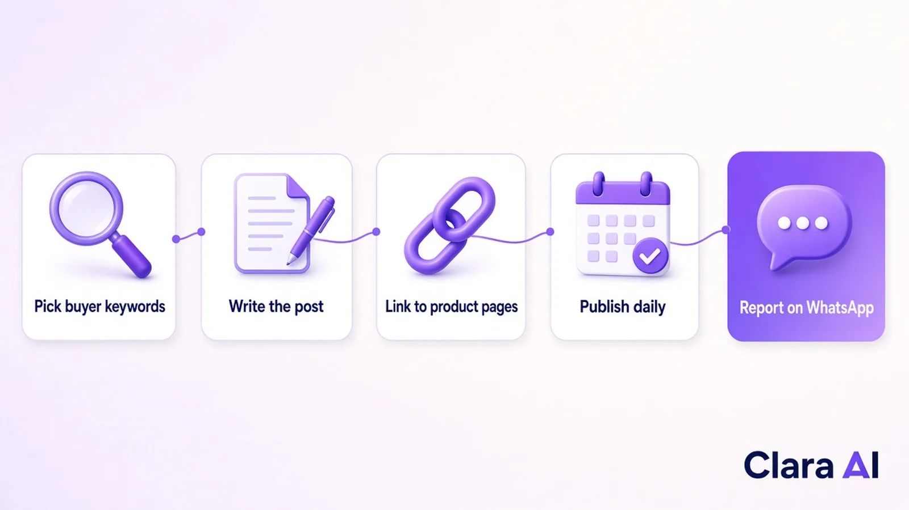

An AI SEO agent for B2B SaaS companies researches the keywords your buyers type, writes a helpful post for each one, links it to your product pages and publishes on your blog every day. It also shapes each post so ChatGPT and other AI search tools can quote it, and reports what went live on WhatsApp, so your team gets steady content without hiring a writer.
Most B2B SaaS teams know content drives pipeline. The problem is output. A founder writes two posts, a freelancer writes three more, then the blog goes quiet for a quarter while the product team ships features. An agent does the one repeatable job, every day, and a person checks it.
SaaS buyers research before they ever book a demo. They search for the problem, compare tools and ask AI assistants for a shortlist. If your company is not in those answers, you are not on the list. The usual blockers are:
Think of it as a careful content marketer who works in a browser and reports to you on WhatsApp. It handles the steps that are easy to skip:

For a plain-language overview, read what an AI SEO agent is.
For B2B SaaS, the money is in searches made close to a decision. A good cluster usually includes:
Generic posts for everyone may lift traffic but rarely bring demo requests. We start with the topics closest to a purchase and build outward from there.
SaaS teams usually weigh four ways of getting steady content:
| Option | Your team's time | Output | Best for |
|---|---|---|---|
| Founder or PM writes | High | Irregular | Deep thought-leadership pieces |
| Freelance writers | Medium: briefs and edits | A few posts a month | One-off topics |
| SEO agency | Medium: calls and approvals | Monthly batches | Large budgets and technical audits |
| AI SEO agent run for you | Low: approve facts once | A post every day | Steady buyer-intent content and AI-search visibility |
We compare these in more depth in AI SEO agent vs SEO agency vs SEO tool.
Google's guidance is clear that it rewards helpful, people-first content, however it is produced. Its page on creating helpful, reliable content explains what it looks for, and its note on using generative AI content warns against mass-producing pages with no added value. Three habits keep an agent on the right side:
AI search tools pick sources that answer the question directly and are easy to parse. The agent writes for that: a 40 to 60 word answer at the top, question-style headings, short lists, comparison tables and an FAQ with schema. It also keeps your product name, category and buyer consistent across posts so AI tools connect them. Our guide to generative engine optimization explains the approach.
We share only dated, real numbers, and we do not yet have one from a SaaS client. On our own blog, organic sessions rose 28% in 10–25 Oct 2026 compared with 24 Sep–9 Oct. SEO compounds, so judge it over two to three months on four numbers: impressions, clicks on buyer keywords, mentions in AI search and demo requests that start on the blog.
Clara AI is a 14-person AI team that builds and runs agents for 19 businesses. We set up the AI SEO Agent and run it for you, so you do not need to hire a content team. A person on our team checks the work, and the live links reach you on WhatsApp. Tell us your product and your buyer, and we aim to show you a first demo within 7 days.
If your sales team also prospects on LinkedIn, our AI LinkedIn Outreach Agent finds the right people, sends personal notes and passes warm replies to you on WhatsApp. Need something else automated? See our custom AI agents.